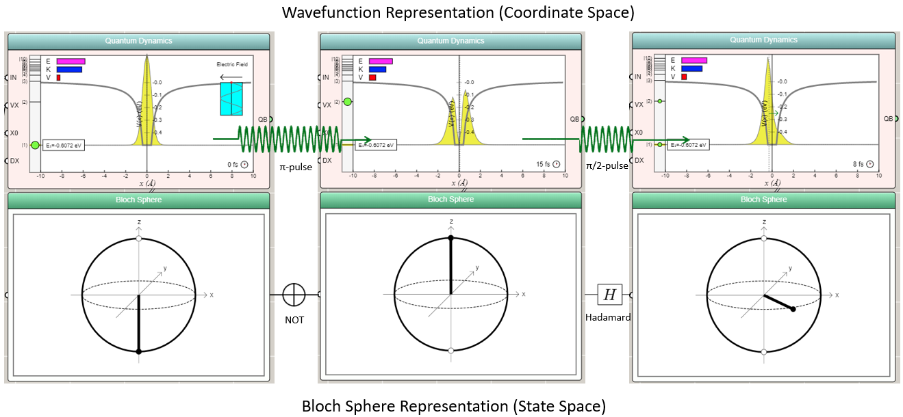

First-Principles Simulations of Qubit Operations
A browser-based quantum simulator that solves the time-dependent Schrödinger equation — unifying the wavefunction and Bloch-sphere pictures of a single qubit.
We have built a prototype in JavaScript that simulates quantum gate operations of a single qubit based on solving the time-dependent Schrödinger equation in one dimension, thus enabling students to learn both quantum mechanics concepts and quantum information applications in a coherent way without using any complex math.
This example models an electron in the Coulomb potential well of a quantum dot (sometimes also referred to as an artificial atom). The ground state and the first excited state are chosen as the two-level system that forms a qubit. An ultrafast laser pulse with a tunable duration is used to flip the qubit to realize the NOT operation or create a superposition state to realize the Hadamard operation through a mechanism known as the Rabi oscillation.

As the result of the quantum dynamics is animated instantaneously, students can observe the time evolution of the wavefunction or probability distribution as well as the rotation of the state vector on the Bloch sphere. The two representations of the quantum phenomenon, typically introduced to students separately (the wavefunction one more commonly in physics whereas the Bloch sphere one more commonly in computer science), are now unified in a single simulation a click away in a Web browser.
← Back to Quantum Explorer